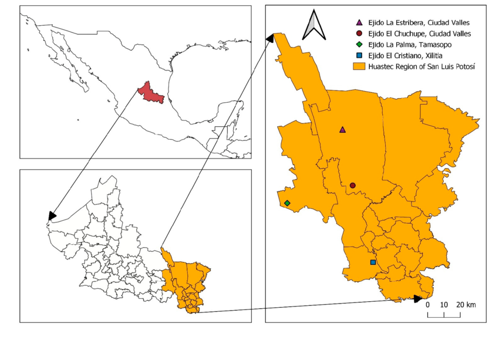
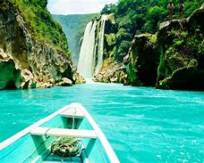
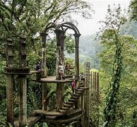
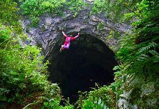

Programación Web I PRIM25
Evaluación práctica Parcial I
Profesora: M.C. Imelda Deyanira Hernández Martínez.
Alumno: Rafael de Jesús Cruz Sánchez
Visita La Huasteca Potosina




Urbano Villalón 500. Col la Ladrillera